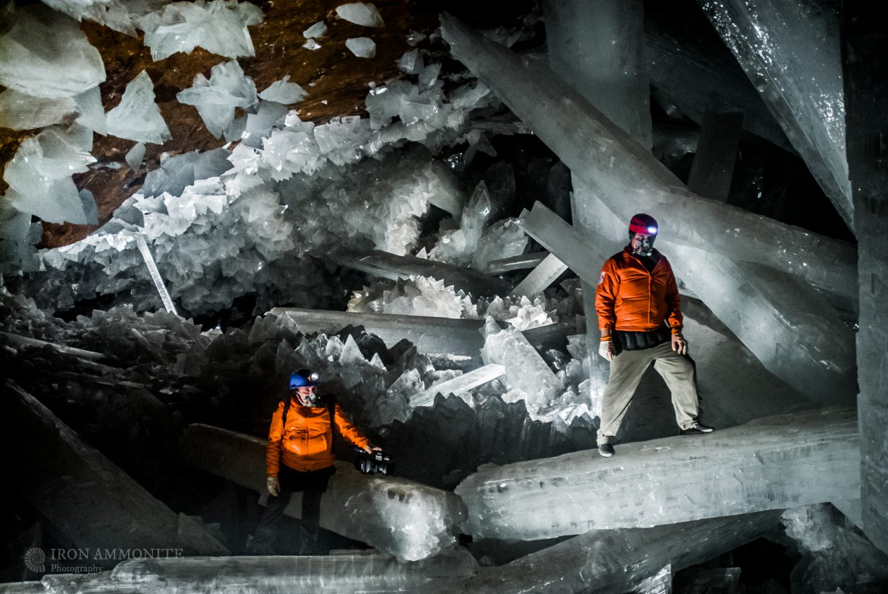

Le lac Peyto, Canada
Le lac Peyto fait partie des plus beaux lieux du Canada. Il se trouve dans le parc national canadien de Banff. Chaque été, la vue depuis le Bow Summit, point le plus élevé, est magnifique. Les somptueuses eaux bleu-vert, qui virent parfois au turquoise, du lac Peyto sont alimentées par le glacier du même nom. De l'autre côté du lac se dresse, abrupte, Mistaya Mountain, avec à sa gauche le pic Peyto. La route descend vers la vallée de la Mistaya par une série de lacets. Le point de vue de Lower Waterfowl Lake (km 56) offre une jolie vue sur notamment le pic Howse (3 290 m) et la pyramide du mont Chephren (3 307 m).
Les Cénotes, Mexique
La péninsule du Yucutan est célèbre pour les cénotes. Ces gouffres et grottes sont remplis d’eau douce. Les cenotes sont le résultat d’une formation géologique unique au monde remontant à des millions d’années quand une astéroïde percuta la Terre. L’impact violent créa des cavités sous-terraines. Au fil des années, les pluie acides ont dissous le calcaire et agrandit les cavités. Des stalagmites et stalactites se sont formées, au rythme d’un centimètre tous les cent ans… Dans le Yucatán, les cenotes sont les seules réserves d’eau douce, (l’origine du mot vient d’ailleurs de dzonot signifiant “trou d’eau” en maya). Ici on ne trouve pas de cascade ni de lac… La présence de cénotes dictaient donc les lieux d’implantation des civilisations mayas.Dans leurs croyances, le cénote était considéré comme une porte vers l’inframonde, le domaine des morts… Lieu sacré, des sacrifices y avaient lieu.
Le lac Maligne, Canada
Le lac Maligne est le plus grand lac naturel des Rocheuses canadiennes. Entouré par des montagnes aux sommets couverts de neige et de glace, ce lac d'une longueur de 22 km s'étend depuis la très sereine île Spirit jusqu'aux canaux des eaux de fonte du glacier Coronet. Une forêt clairsemée de pins tordus et d'épinettes, refuge de l'orignal, du caribou, de l'arlequin plongeur et de bien d'autres espèces d'animaux sauvages, entoure les visiteurs sur la rive nord du lac. Les sentiers de randonnée et les pistes de ski de fond sont abondants; c'est pourquoi les visites y sont très populaires en toute saison.

Les aurores boréales du Yukon, Canada
Whithehorse, 32 000 habitants, capitale d’un pays grand comme l’Espagne, qui n’en compte que 35 000 au total. Plus désert que le Sahara, avec des températures aussi extrêmes mais inversées. Du côté obscur du zéro. En fait, ce n’est pas un pays mais une province subarctique du grand nord canadien : le Yukon, coincé entre l’Alaska et les Territoires du Nord-Ouest, posé sur la Colombie britannique à la limite du cercle polaire. Le pays de la ruée vers l’or parodiée par Chaplin, où le ciel peut être d’or au cœur de la nuit. L’aurore boréale naît du choc entre les particules projetées dans l’espace par les éruptions solaires et le champ magnétique de la Terre. Elles sont déviées dans leur course folle mais s’irisent en glissant sur l’atmosphère, et ce phénomène est d’autant plus visible qu’on se rapproche du pôle. C’est aussi vrai dans le grand nord scandinave que canadien, mais c’est plus exotique d’aller les traquer dans l’une des régions les moins explorées de la planète, les plus vierges de toute empreinte humaine.
The wave, Etats-Unis
L’ouest américain ne cesse de surprendre, de fasciner avec ses parcs somptueux et ses curiosités naturelles étonnantes, ses immenses étendues sauvages et ses étranges formations géologiques. Perdue entre deux États, The Wave, est un site unique, terriblement sauvage et absolument éblouissant. Tant et si bien qu’il est très protégé et qu’un nombre limité de visiteurs par jour est autorisé à fouler les lieux. The Wave est une curiosité unique en son genre. Ce site spectaculaire ressemble à un ensemble grandeur nature de vagues qui se déroulent en un mouvement régulier. Le relief et les lignes de couleur blanche, rose et rouge forment une houle parfaite, tandis que les couleurs flamboyantes viennent compléter l’aspect surnaturel des lieux.
Le lac Agnès, Canada
Lake Agnes est un petit lac de montagne situé dans le parc national de Banff dans la province d'Alberta, au Canada.
Il a une superficie de 0,52 km2 et est situé à environ 3,5 km de Lake Louise. Un salon de thé se trouve sur la rive orientale à une altitude de 2 134 mètres (7 001,31 pi). Un chemin de randonnée continue à descendre le long de la rive nord, tournant à 180° avant de commencer l'ascension du Big Beehive.
La « Playa del Amor », Mexique
La plage cachée des îles Marieta se situe près de Puerto Vallarta au Mexique.
Surnommée "Playa del Amor", ce paysage insolite n'est accessible qu'à marée basse et il faudra traverser une grotte à la nage pour l'atteindre.
L'environnement de la Playa escondida (en espagnol) ou Hidden Beach (en anglais) s'est développé depuis plusieurs années sans aucune perturbation de l'homme. Par conséquent, la faune et la flore sont sauvages et intrigantes, rendant ce lieu aussi unique que palpitant.
Située à quelques kilomètres au large des côtes du Mexique, près de la baie de Bandera, les îles Marieta sont des archipels qui ont été formées à la suite de l'activité volcanique. Ces îles sont restées désertes pendant des années. Ce n'est que récemment que l'aspect récréatif de l'endroit a été développé, avec des excursions à la plage cachée mais aussi de nombreuses activités offertes par la diversité de l'écosystème marin.
Les îles Marieta sont réputées comme étant l'un des meilleurs spots pour le snorkeling et la plongée en raison de sa nature vierge et de la diversité qu'elle offre. Baleine à bosse, tortues de mer, dauphins et plus de 100 espèces de poissons sont toujours au rendez-vous. C'est également un lieu réputé pour l'observation des oiseaux.

Les chutes du Niagara, Canada
Les chutes du Niagara font partie des plus belles chutes d’eau du monde. Avec leurs 52m de hauteur, elles attirent chaque année plusieurs millions de touristes. Elles se divisent en 3 parties : le « fer à cheval », les « chutes américaines » et le « voile de la mariée ». D’ailleurs, des compagnies emmènent les touristes au plus près des chutes.nnée, encadrés par les pics du Fitz Roy ; les meilleurs points de vue sont à une journée de marche de la ville.
Le désert de sable blanc, Etats Unis
Le désert de White Sands est certainement l'une des plus belles choses à voir aux États-Unis. Il s'étend sur près de 410 km² dans le bassin de Tularosa, dans le Nouveau Mexique et promet une experience absolument incroyable à tous ces visiteurs.
Le sable blanc qui compose les dunes est relativement particulier, et donne l'impression d'évoluer sur la lune surtout pendant le nuit. Sa particularité et sa couleur vient du fait qu'il s'agit de gypse minéral ordinaire, un minéral en théroie introuvable sous forme de sable car étant soluble dans l'eau, et disparaissant donc ensuite.
Des montagnes entourent le désert, et par sa taille importante, il est déconseillé de marcher seul au risque de se perdre dans son immensitude.

La grotte de Naïca, Mexique
Découverte en 1999, c'est l'une des plus grandes merveilles souterraines de la planète : la grotte de Naica, dans l'état de Chihuahua, au Mexique, renferme des cristaux de gypse géants, pouvant mesurer jusqu'à 10 mètres.